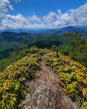
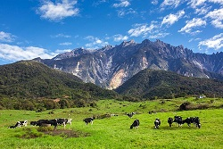
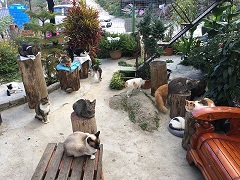
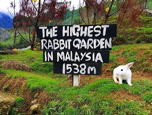

HIKING

Maragang Hill
Things to do at Kundasang is hiking Maragang Hill because it has beautifull scenery. The strawberry farm is nearby so the hikers can stop by to buy strawberries as a souveniers.

Dairy Farm
Desa Dairy Farm is Located at Ranau Sabah. Most of the travellers will come here to buy some dairy and snap some photos as memories here.
MINI ZOO

Mesilou Cats Farm
Mesilou Cats Farm is also the focus of the travellers to visit. It is also located in Kundasang's Zoo

To visit Rabbit Farm in Kundasang, visitors need to pay RM5 per entrance. There is no limit time to roam inside the farm.